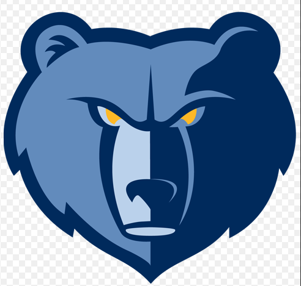

Grizzlies
The Memphis Grizzlies are an American professional basketball team based in Memphis, Tennessee. The Grizzlies compete in the National Basketball Association (NBA) as a member of the league's Western Conference Southwest Division. The Grizzlies play their home games at FedExForum. The team is owned by Robert Pera. The Grizzlies are currently the only team in the major professional North American sports leagues based in the city of Memphis, and is the only professional basketball team in the state of Tennessee. The team was originally established as the Vancouver Grizzlies, an expansion team that joined the NBA for the 1995–96 season. After the 2000–01 season concluded, the Grizzlies moved to Memphis.
Marc Gasol Sáez ( born 29 January 1985) is a Spanish professional basketball player for the Los Angeles Lakers of the National Basketball Association (NBA). A center, he was drafted 48th overall by the Los Angeles Lakers in the 2007 NBA draft. After having his rights traded to the Memphis Grizzlies in February 2008 in a deal that sent his older brother Pau to the Lakers, he signed with the team and remained with the franchise until being traded to the Toronto Raptors in 2019, where he won his first NBA championship. He is a two-time All-NBA Team member, a three-time NBA All-Star, and an NBA champion. In 2013, he was named the NBA Defensive Player of the Year. Gasol has been a regular member of the Spain national team since 2006. He has won two Olympic silver medals and two FIBA Basketball World Cup titles. In the EuroBasket, he has won two titles, a silver medal, and two bronze medals.
Temetrius Jamel "Ja" Morant (born August 10, 1999) is an American professional basketball player for the Memphis Grizzlies of the National Basketball Association (NBA). He played college basketball for the Murray State Racers, where he was a consensus first-team All-American as a sophomore in 2019. He was selected by the Grizzlies with the second overall pick in the 2019 NBA draft and named the NBA Rookie of the Year in 2020. Morant was only lightly recruited by NCAA Division I programs and unranked by recruiting services; this was despite having been named All-Region Most Valuable Player three times and earning All-State honors at Crestwood High School in Sumter, South Carolina. Nevertheless, he made an immediate impact at Murray State University, earning first-team all-conference honors in the Ohio Valley Conference (OVC) as a freshman. He had a breakout sophomore season; it saw him win OVC Player of the Year as well as lead the NCAA in assists. Also as a sophomore, Morant became the first player in NCAA history to average 20-plus points and 10-plus assists per game for a single season.